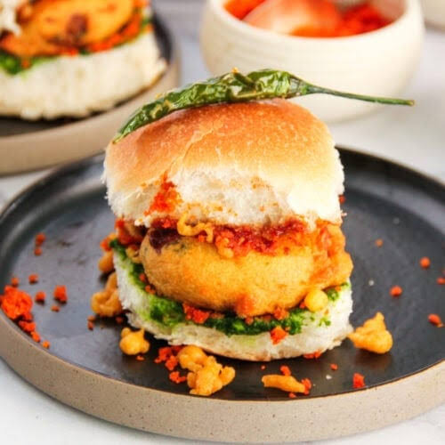

Vada Pav

Description:
Vada Pav is the ultimate, non-negotiable lifeline and crown jewel of Mumbai street food! Affectionately dubbed the 'Bombay Burger,' it features a fiery, golden-fried potato dumpling (batata vada) laced with mustard seeds, fresh ginger, and green chillies. This crispy delight is nestled inside a pillow-soft bread roll (pav) that has been generously slathered with sweet-tangy tamarind chutney,
spicy green chutney, and a lethal dusting of garlic-coconut dry chutney.
Ingredients
- Potatoes: 4 large, boiled, peeled, and mashed.
- Green Chillies & Ginger: 3 green chillies and 1-inch ginger, crushed into a coarse paste.
- Garlic: 5-6 cloves, crushed.
- Mustard Seeds (Rai): 1 teaspoon.
- Asafoetida (Hing): A generous pinch.
- Turmeric Powder (Haldi): ½ teaspoon.
- Curry Leaves (Kadi Patta): 8-10 leaves.
- Fresh Coriander: ¼ cup, finely chopped.
- Lemon Juice: 1 tablespoon.
- Salt: To taste.
- Gram Flour (Besan): 1.5 cups.
- Turmeric Powder: ¼ teaspoon.
- Kashmiri Red Chilli Powder: ½ teaspoon.
- Baking Soda: A tiny pinch (optional, makes it fluffy).
- Water: About ¾ cup (to make a thick, flowing batter).
- Oil: For deep frying.
- Garlic: 10-12 cloves (peels left on for street-style flavor).
- Desiccated Coconut (Kopra): ½ cup.
- Peanuts: 2 tablespoons (optional, adds texture).
- Salt: To taste.
- Ladi Pav: 1-2 packets of fresh, soft bread rolls.
Steps to make vada-pav:
- Make the Potato Filling: Saute mustard seeds, hing, currey leaves, ginger, garlic and green chillies. Add turmeric, salt, mashed potatoes and coriander. Let it cool and make round balls of it.
- Prepare the Batter: Whisk besan, turmeric,salt, pinch of soda and water. Create a smooth, thick batter that easily coats the back of a spoon.
- Fry the Vadas: Dip each potato ball into batter and drop it into the hot oil and deep-fry until golden brown.Drop them on paper towels.
- Blend the Dry Garlic Chutney: Roast garlic cloves, dessicated coconut, and peanuts in a pan, grind them coarsely with red chilli powder and salt.
- Assemble: Slit the pav open, keepig below one side attached. Spread green chutney on one side and sweet tamarind on other,sprinkle dry chutntey inside.